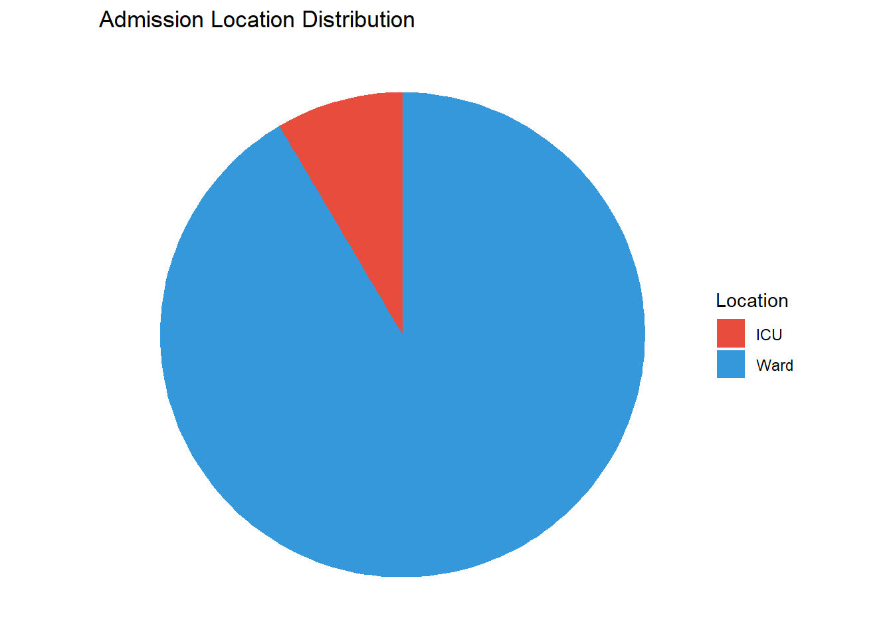
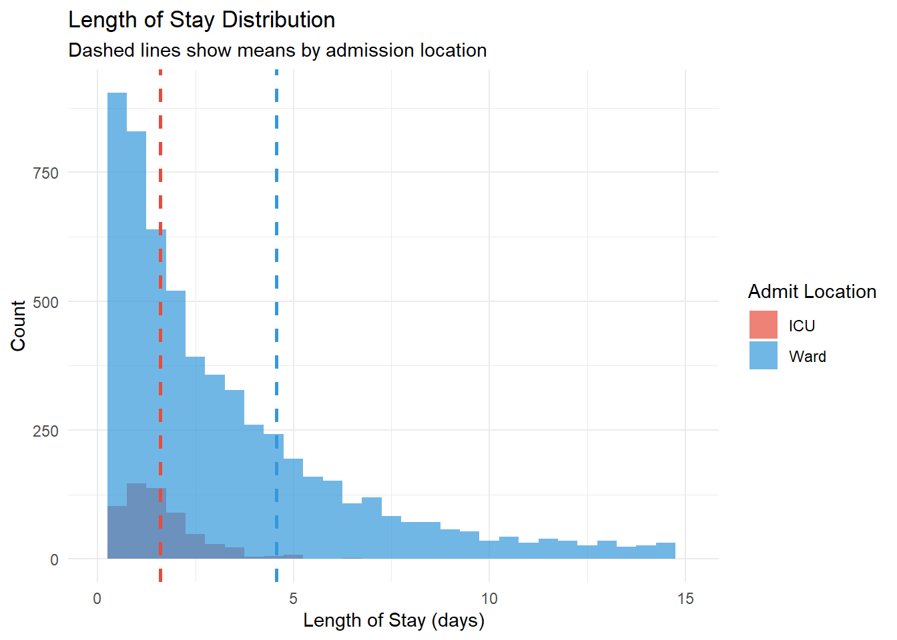
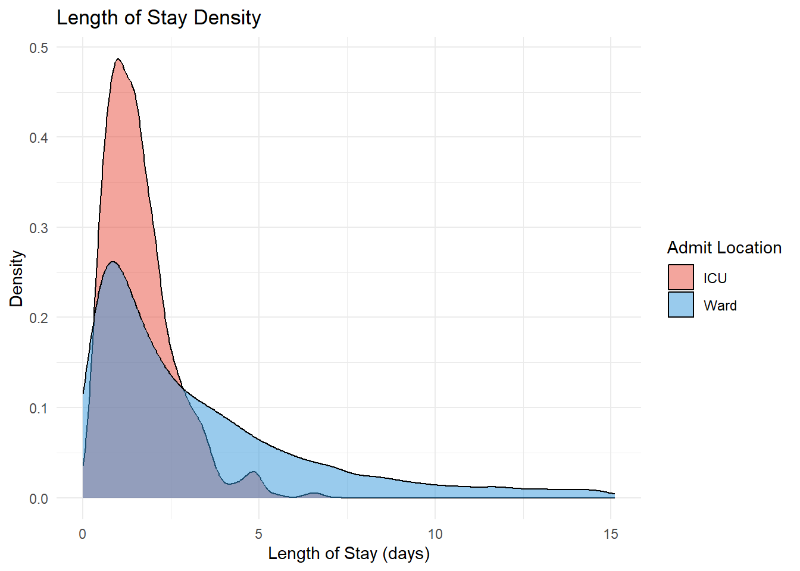
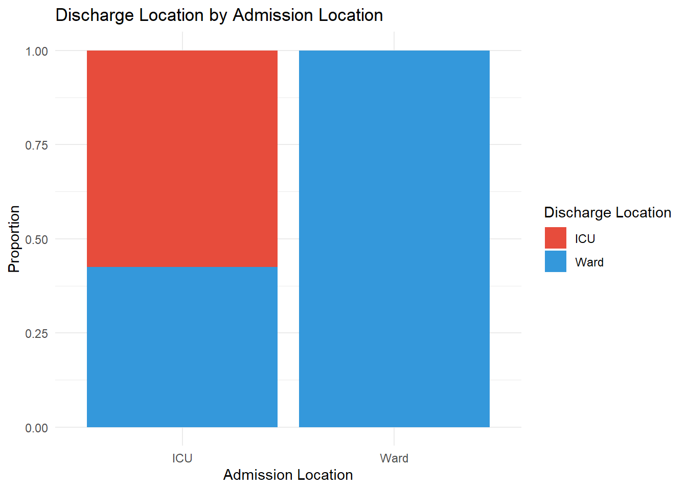
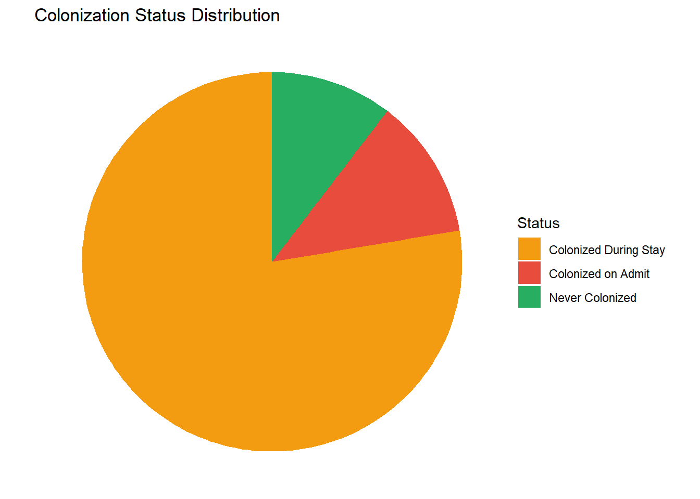
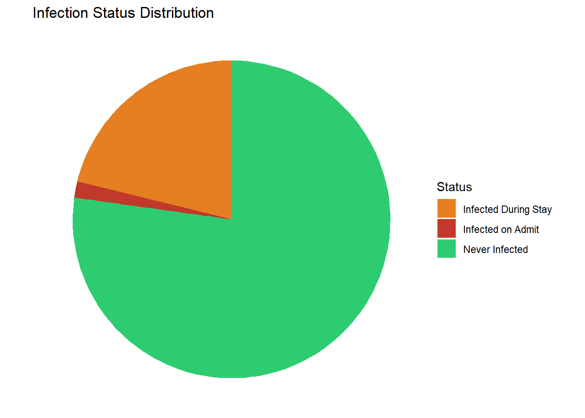
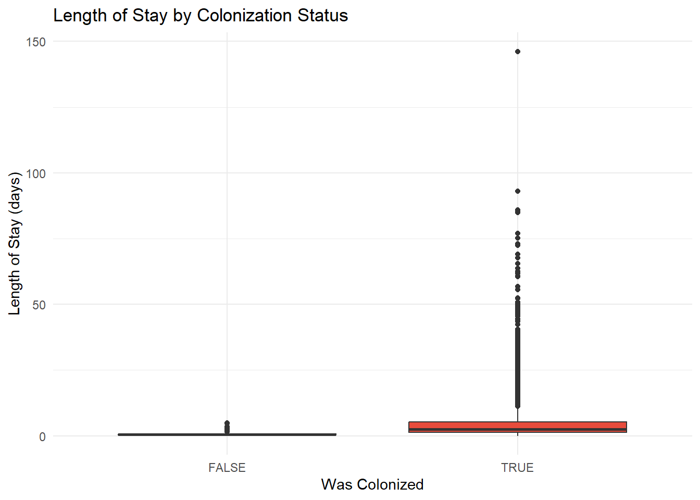
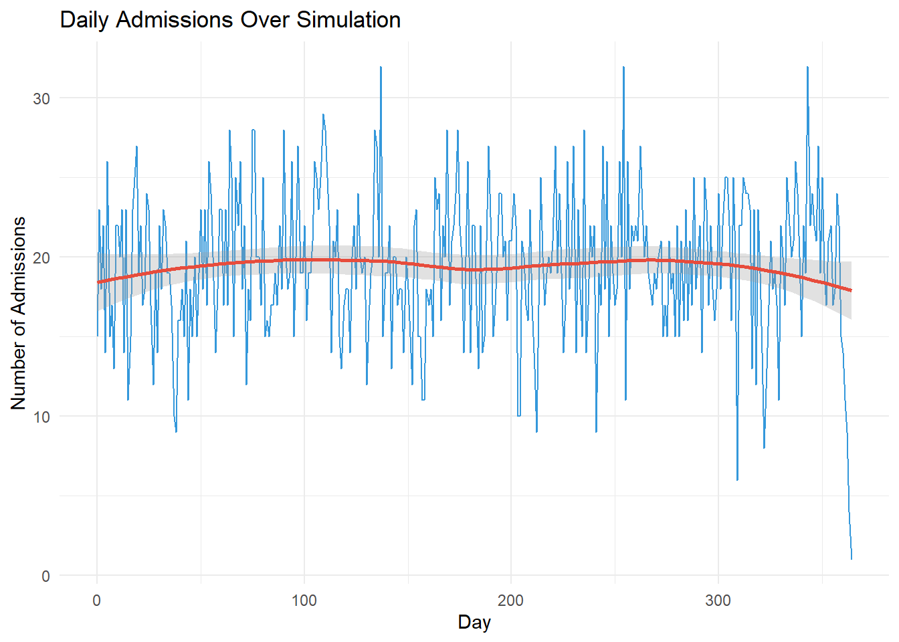
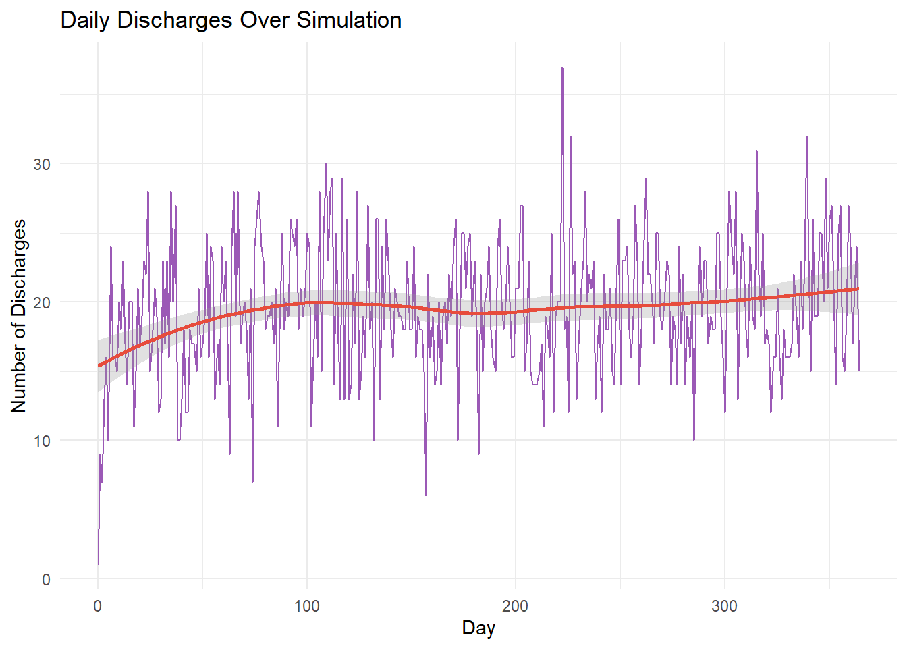
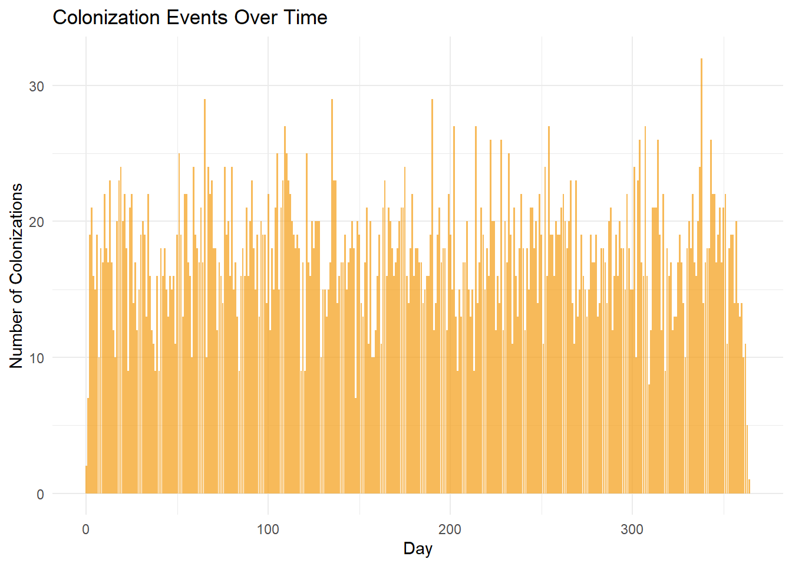

# Read discharged_patients.txt into a dataframe
df <- read.table("discharged_patients.txt", header = TRUE, sep = ",", stringsAsFactors = FALSE)
# Convert boolean columns from strings to logical
df$icuAdmit <- tolower(df$icuAdmit) == "true"
df$colonizedOnAdmit <- tolower(df$colonizedOnAdmit) == "true"
df$infectedOnAdmit <- tolower(df$infectedOnAdmit) == "true"
df$death <- tolower(df$death) == "true"
# Calculate derived columns
df$los <- df$dischargeTime - df$admitTime
df$wasTransferred <- df$transferTime > 0
df$wasColonized <- df$colonizedTime > 0
df$wasInfected <- df$infectedTime > 0
df$colonizedDuringStay <- df$wasColonized & !df$colonizedOnAdmit
df$infectedDuringStay <- df$wasInfected & !df$infectedOnAdmit
# Time to colonization/infection from admission
df$timeToColonization <- ifelse(df$wasColonized, df$colonizedTime - df$admitTime, NA)
df$timeToInfection <- ifelse(df$wasInfected, df$infectedTime - df$admitTime, NA)Discharged Patients Analysis
Summary Statistics
total_patients <- nrow(df)
total_icu_admit <- sum(df$icuAdmit)
total_ward_admit <- total_patients - total_icu_admit
total_deaths <- sum(df$death)Overall Patient Census
| Metric | Value |
|---|---|
| Total Discharged Patients | 7101 |
| Admitted to ICU | 603 (8.5%) |
| Admitted to Ward | 6498 (91.5%) |
| Total Deaths | 0 (0%) |
Admission Patterns
ICU vs Ward Admissions
admit_counts <- data.frame(
type = c("ICU", "Ward"),
count = c(total_icu_admit, total_ward_admit)
)
ggplot(admit_counts, aes(x = "", y = count, fill = type)) +
geom_bar(stat = "identity", width = 1) +
coord_polar(theta = "y") +
labs(title = "Admission Location Distribution", x = NULL, y = NULL, fill = "Location") +
theme_void() +
scale_fill_manual(values = c("ICU" = "#e74c3c", "Ward" = "#3498db"))
Length of Stay Analysis
icu_patients <- df[df$icuAdmit, ]
ward_patients <- df[!df$icuAdmit, ]LOS Summary Statistics
| Group | N | Mean | Median | SD | Min | Max |
|---|---|---|---|---|---|---|
| All Patients | 7101 | 4.31 | 2.19 | 6.93 | 0.02 | 146.19 |
| ICU Admits | 603 | 1.61 | 1.41 | 1 | 0.18 | 6.68 |
| Ward Admits | 6498 | 4.56 | 2.37 | 7.19 | 0.02 | 146.19 |
LOS Distribution by Admission Location
q95 <- quantile(df$los, 0.95, na.rm = TRUE)
ggplot(df, aes(x = los, fill = ifelse(icuAdmit, "ICU", "Ward"))) +
geom_histogram(binwidth = 0.5, alpha = 0.7, position = "identity") +
xlim(0, q95) +
geom_vline(aes(xintercept = mean(icu_patients$los)), color = "#e74c3c", linetype = "dashed", size = 1) +
geom_vline(aes(xintercept = mean(ward_patients$los)), color = "#3498db", linetype = "dashed", size = 1) +
labs(title = "Length of Stay Distribution",
subtitle = "Dashed lines show means by admission location",
x = "Length of Stay (days)",
y = "Count",
fill = "Admit Location") +
scale_fill_manual(values = c("ICU" = "#e74c3c", "Ward" = "#3498db")) +
theme_minimal()
LOS Density Plot
ggplot(df, aes(x = los, fill = ifelse(icuAdmit, "ICU", "Ward"))) +
geom_density(alpha = 0.5) +
xlim(0, q95) +
labs(title = "Length of Stay Density",
x = "Length of Stay (days)",
y = "Density",
fill = "Admit Location") +
scale_fill_manual(values = c("ICU" = "#e74c3c", "Ward" = "#3498db")) +
theme_minimal()
Transfer Analysis
total_transfers <- sum(df$wasTransferred)
transfers_icu_to_ward <- sum(df$wasTransferred & df$admitLocation == "ICU")
transfers_ward_to_icu <- sum(df$wasTransferred & df$admitLocation == "Ward")Transfer Summary
| Metric | Value |
|---|---|
| Total Transfers | 446 (6.3% of patients) |
| ICU to Ward | 446 |
| Ward to ICU | 0 |
Time to Transfer (from Admission)
transferred_df <- df[df$wasTransferred, ]
if (nrow(transferred_df) > 0) {
transferred_df$timeToTransfer <- transferred_df$transferTime - transferred_df$admitTime
ggplot(transferred_df, aes(x = timeToTransfer)) +
geom_histogram(binwidth = 0.5, fill = "#9b59b6", color = "black", alpha = 0.7) +
labs(title = "Distribution of Time to Transfer",
x = "Days from Admission to Transfer",
y = "Count") +
theme_minimal()
cat("Mean time to transfer:", round(mean(transferred_df$timeToTransfer), 2), "days\n")
cat("Median time to transfer:", round(median(transferred_df$timeToTransfer), 2), "days\n")
} else {
cat("No transfers occurred in this simulation run.\n")
}Mean time to transfer: 2.36 days
Median time to transfer: 2.15 daysDischarge Location by Admission Location
flow_table <- df %>%
group_by(admitLocation, dischargeLocation) %>%
summarise(count = n(), .groups = "drop") %>%
mutate(pct = round(100 * count / sum(count), 1))
kable(flow_table, col.names = c("Admit Location", "Discharge Location", "Count", "% of Total"))| Admit Location | Discharge Location | Count | % of Total |
|---|---|---|---|
| ICU | ICU | 603 | 8.5 |
| ICU | Ward | 446 | 6.3 |
| Ward | Ward | 6052 | 85.2 |
# Simple bar chart showing flow
ggplot(df, aes(x = admitLocation, fill = dischargeLocation)) +
geom_bar(position = "fill") +
labs(title = "Discharge Location by Admission Location",
x = "Admission Location",
y = "Proportion",
fill = "Discharge Location") +
scale_fill_manual(values = c("ICU" = "#e74c3c", "Ward" = "#3498db")) +
theme_minimal()
Disease Analysis
Colonization Summary
colonized_on_admit <- sum(df$colonizedOnAdmit)
colonized_during_stay <- sum(df$colonizedDuringStay)
total_colonized <- sum(df$wasColonized)
never_colonized <- total_patients - total_colonized| Metric | Value |
|---|---|
| Colonized on Admission | 850 (12%) |
| Colonized During Stay | 5514 (77.7%) |
| Total Ever Colonized | 6364 (89.6%) |
| Never Colonized | 737 (10.4%) |
colon_counts <- data.frame(
status = c("Colonized on Admit", "Colonized During Stay", "Never Colonized"),
count = c(colonized_on_admit, colonized_during_stay, never_colonized)
)
ggplot(colon_counts, aes(x = "", y = count, fill = status)) +
geom_bar(stat = "identity", width = 1) +
coord_polar(theta = "y") +
labs(title = "Colonization Status Distribution", x = NULL, y = NULL, fill = "Status") +
theme_void() +
scale_fill_manual(values = c("Colonized on Admit" = "#e74c3c",
"Colonized During Stay" = "#f39c12",
"Never Colonized" = "#27ae60"))
Infection Summary
infected_on_admit <- sum(df$infectedOnAdmit)
infected_during_stay <- sum(df$infectedDuringStay)
total_infected <- sum(df$wasInfected)
never_infected <- total_patients - total_infected| Metric | Value |
|---|---|
| Infected on Admission | 117 (1.6%) |
| Infected During Stay | 1503 (21.2%) |
| Total Ever Infected | 1620 (22.8%) |
| Never Infected | 5481 (77.2%) |
infect_counts <- data.frame(
status = c("Infected on Admit", "Infected During Stay", "Never Infected"),
count = c(infected_on_admit, infected_during_stay, never_infected)
)
ggplot(infect_counts, aes(x = "", y = count, fill = status)) +
geom_bar(stat = "identity", width = 1) +
coord_polar(theta = "y") +
labs(title = "Infection Status Distribution", x = NULL, y = NULL, fill = "Status") +
theme_void() +
scale_fill_manual(values = c("Infected on Admit" = "#c0392b",
"Infected During Stay" = "#e67e22",
"Never Infected" = "#2ecc71"))
Time to Colonization (Hospital-Acquired)
ha_colonized <- df[df$colonizedDuringStay, ]
if (nrow(ha_colonized) > 0) {
ggplot(ha_colonized, aes(x = timeToColonization)) +
geom_histogram(binwidth = 1, fill = "#f39c12", color = "black", alpha = 0.7) +
labs(title = "Time to Hospital-Acquired Colonization",
x = "Days from Admission to Colonization",
y = "Count") +
theme_minimal()
cat("Mean time to colonization:", round(mean(ha_colonized$timeToColonization), 2), "days\n")
cat("Median time to colonization:", round(median(ha_colonized$timeToColonization), 2), "days\n")
} else {
cat("No hospital-acquired colonizations occurred in this simulation run.\n")
}Mean time to colonization: 0.45 days
Median time to colonization: 0.34 daysTime to Infection (for those who progressed)
ha_infected <- df[df$infectedDuringStay, ]
if (nrow(ha_infected) > 0) {
ggplot(ha_infected, aes(x = timeToInfection)) +
geom_histogram(binwidth = 1, fill = "#e67e22", color = "black", alpha = 0.7) +
labs(title = "Time to Infection (Hospital-Acquired)",
x = "Days from Admission to Infection",
y = "Count") +
theme_minimal()
cat("Mean time to infection:", round(mean(ha_infected$timeToInfection), 2), "days\n")
cat("Median time to infection:", round(median(ha_infected$timeToInfection), 2), "days\n")
} else {
cat("No hospital-acquired infections occurred in this simulation run.\n")
}Mean time to infection: 4.39 days
Median time to infection: 3.58 daysDisease by Location
Colonization by Admission Location
colon_by_loc <- df %>%
group_by(admitLocation) %>%
summarise(
n = n(),
colonized_admit = sum(colonizedOnAdmit),
colonized_stay = sum(colonizedDuringStay),
total_colonized = sum(wasColonized),
pct_colonized = round(100 * sum(wasColonized) / n(), 1),
.groups = "drop"
)
kable(colon_by_loc,
col.names = c("Admit Location", "N", "Colonized on Admit",
"Colonized During Stay", "Total Colonized", "% Colonized"))| Admit Location | N | Colonized on Admit | Colonized During Stay | Total Colonized | % Colonized |
|---|---|---|---|---|---|
| ICU | 1049 | 132 | 905 | 1037 | 98.9 |
| Ward | 6052 | 718 | 4609 | 5327 | 88.0 |
Infection by Admission Location
infect_by_loc <- df %>%
group_by(admitLocation) %>%
summarise(
n = n(),
infected_admit = sum(infectedOnAdmit),
infected_stay = sum(infectedDuringStay),
total_infected = sum(wasInfected),
pct_infected = round(100 * sum(wasInfected) / n(), 1),
.groups = "drop"
)
kable(infect_by_loc,
col.names = c("Admit Location", "N", "Infected on Admit",
"Infected During Stay", "Total Infected", "% Infected"))| Admit Location | N | Infected on Admit | Infected During Stay | Total Infected | % Infected |
|---|---|---|---|---|---|
| ICU | 1049 | 20 | 272 | 292 | 27.8 |
| Ward | 6052 | 97 | 1231 | 1328 | 21.9 |
LOS by Disease Status
LOS: Colonized vs Non-Colonized
colonized_df <- df[df$wasColonized, ]
noncolonized_df <- df[!df$wasColonized, ]
if (nrow(colonized_df) > 0 && nrow(noncolonized_df) > 0) {
los_comparison <- data.frame(
Group = c("Colonized", "Not Colonized"),
N = c(nrow(colonized_df), nrow(noncolonized_df)),
Mean_LOS = c(mean(colonized_df$los), mean(noncolonized_df$los)),
Median_LOS = c(median(colonized_df$los), median(noncolonized_df$los)),
SD_LOS = c(sd(colonized_df$los), sd(noncolonized_df$los))
)
kable(los_comparison, digits = 2)
ggplot(df, aes(x = wasColonized, y = los, fill = wasColonized)) +
geom_boxplot() +
labs(title = "Length of Stay by Colonization Status",
x = "Was Colonized",
y = "Length of Stay (days)") +
scale_fill_manual(values = c("FALSE" = "#27ae60", "TRUE" = "#e74c3c")) +
theme_minimal() +
theme(legend.position = "none")
}
LOS: Infected vs Non-Infected
infected_df <- df[df$wasInfected, ]
noninfected_df <- df[!df$wasInfected, ]
if (nrow(infected_df) > 0 && nrow(noninfected_df) > 0) {
los_comparison_inf <- data.frame(
Group = c("Infected", "Not Infected"),
N = c(nrow(infected_df), nrow(noninfected_df)),
Mean_LOS = c(mean(infected_df$los), mean(noninfected_df$los)),
Median_LOS = c(median(infected_df$los), median(noninfected_df$los)),
SD_LOS = c(sd(infected_df$los), sd(noninfected_df$los))
)
kable(los_comparison_inf, digits = 2)
ggplot(df, aes(x = wasInfected, y = los, fill = wasInfected)) +
geom_boxplot() +
labs(title = "Length of Stay by Infection Status",
x = "Was Infected",
y = "Length of Stay (days)") +
scale_fill_manual(values = c("FALSE" = "#2ecc71", "TRUE" = "#c0392b")) +
theme_minimal() +
theme(legend.position = "none")
}
Temporal Patterns
Admissions Over Time
df$admitDay <- floor(df$admitTime)
admissions_by_day <- df %>%
group_by(admitDay) %>%
summarise(count = n(), .groups = "drop")
ggplot(admissions_by_day, aes(x = admitDay, y = count)) +
geom_line(color = "#3498db") +
geom_smooth(method = "loess", se = TRUE, color = "#e74c3c", alpha = 0.3) +
labs(title = "Daily Admissions Over Simulation",
x = "Day",
y = "Number of Admissions") +
theme_minimal()
Discharges Over Time
df$dischargeDay <- floor(df$dischargeTime)
discharges_by_day <- df %>%
group_by(dischargeDay) %>%
summarise(count = n(), .groups = "drop")
ggplot(discharges_by_day, aes(x = dischargeDay, y = count)) +
geom_line(color = "#9b59b6") +
geom_smooth(method = "loess", se = TRUE, color = "#e74c3c", alpha = 0.3) +
labs(title = "Daily Discharges Over Simulation",
x = "Day",
y = "Number of Discharges") +
theme_minimal()
Colonization Events Over Time
colonization_events <- df[df$wasColonized, ]
if (nrow(colonization_events) > 0) {
colonization_events$colonizationDay <- floor(colonization_events$colonizedTime)
colon_by_day <- colonization_events %>%
group_by(colonizationDay) %>%
summarise(count = n(), .groups = "drop")
ggplot(colon_by_day, aes(x = colonizationDay, y = count)) +
geom_bar(stat = "identity", fill = "#f39c12", alpha = 0.7) +
labs(title = "Colonization Events Over Time",
x = "Day",
y = "Number of Colonizations") +
theme_minimal()
}
Full Data Summary
cat("=== SIMULATION SUMMARY ===\n\n")=== SIMULATION SUMMARY ===cat("Total Patients:", total_patients, "\n")Total Patients: 7101 cat("Simulation Duration:", max(df$dischargeTime), "days\n\n")Simulation Duration: 364.9873 dayscat("--- ADMISSIONS ---\n")--- ADMISSIONS ---cat("ICU Admits:", total_icu_admit, "(", round(100*total_icu_admit/total_patients, 1), "%)\n")ICU Admits: 603 ( 8.5 %)cat("Ward Admits:", total_ward_admit, "(", round(100*total_ward_admit/total_patients, 1), "%)\n\n")Ward Admits: 6498 ( 91.5 %)cat("--- LENGTH OF STAY ---\n")--- LENGTH OF STAY ---cat("Overall Mean LOS:", round(mean(df$los), 2), "days\n")Overall Mean LOS: 4.31 dayscat("ICU Admit Mean LOS:", round(mean(icu_patients$los), 2), "days\n")ICU Admit Mean LOS: 1.61 dayscat("Ward Admit Mean LOS:", round(mean(ward_patients$los), 2), "days\n\n")Ward Admit Mean LOS: 4.56 dayscat("--- TRANSFERS ---\n")--- TRANSFERS ---cat("Total Transfers:", total_transfers, "(", round(100*total_transfers/total_patients, 1), "%)\n\n")Total Transfers: 446 ( 6.3 %)cat("--- COLONIZATION ---\n")--- COLONIZATION ---cat("Colonized on Admission:", colonized_on_admit, "(", round(100*colonized_on_admit/total_patients, 1), "%)\n")Colonized on Admission: 850 ( 12 %)cat("Hospital-Acquired Colonization:", colonized_during_stay, "(", round(100*colonized_during_stay/total_patients, 1), "%)\n")Hospital-Acquired Colonization: 5514 ( 77.7 %)cat("Total Colonized:", total_colonized, "(", round(100*total_colonized/total_patients, 1), "%)\n\n")Total Colonized: 6364 ( 89.6 %)cat("--- INFECTION ---\n")--- INFECTION ---cat("Infected on Admission:", infected_on_admit, "(", round(100*infected_on_admit/total_patients, 1), "%)\n")Infected on Admission: 117 ( 1.6 %)cat("Hospital-Acquired Infection:", infected_during_stay, "(", round(100*infected_during_stay/total_patients, 1), "%)\n")Hospital-Acquired Infection: 1503 ( 21.2 %)cat("Total Infected:", total_infected, "(", round(100*total_infected/total_patients, 1), "%)\n\n")Total Infected: 1620 ( 22.8 %)cat("--- MORTALITY ---\n")--- MORTALITY ---cat("Total Deaths:", total_deaths, "(", round(100*total_deaths/total_patients, 1), "%)\n")Total Deaths: 0 ( 0 %)